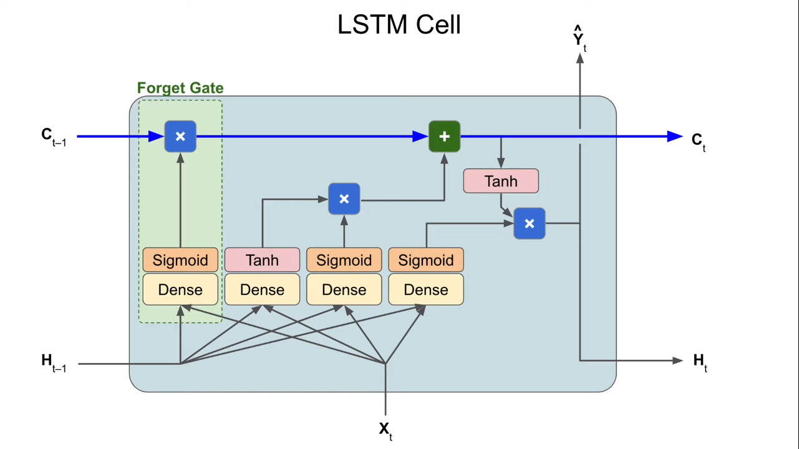

References
TensorFlow Introduction
Transfer Learning
Load Data Set
import tensorflow as tf
import tensorflow_hub as hub
import tensorflow_datasets as tfds(xTrain, xVal), info = tfds.load(
'cats_vs_dogs',
with_info=True,
as_supervised=True,
split=['train[:80%]', 'train[80%:]'],
)
num_examples = info.splits['train'].num_examples
num_classes = info.features['label'].num_classesResize Input Images
Different pretrained NNs have different required input image size.
BATCH_SIZE = 32
dim = 224
def format_image(image, label):
image = tf.image.resize(image, (dim, dim))/255.0
return image, label
num_examples = info.splits['train'].num_examples
train_batches = xTrain.shuffle(buffer_size=num_examples//4).map(format_image).batch(BATCH_SIZE).prefetch(1)
validation_batches = xVal.cache().map(format_image).batch(BATCH_SIZE).prefetch(1)Transfer Learning from TensorFlow Hub
url = "https://tfhub.dev/google/tf2-preview/..."
extractor = hub.KerasLayer(url, input_shape=(255, 255, 3))
# disable the training so that all weights kept
extractor.trainable = False
model = tf.keras.Sequential([extractor, layers.Dense(2)])Save Models
Usually, use timestamp as part of the file name so that it is unique.
t = time.time()
path = "./model_{}.h5".format(int(t))
model.save(path)Reload the model.
reloaded = tf.keras.models.load_model({path, custom_objects={'hub.KerasLayer'}})
reloaded.summary()Export as SavedModel
t = time.time()
path = "./model_{}".format(int(t))
tf.saved_model.save(model, path)Reload a savedmodel. Notice that the object returned by tf.saved_model.load is not a Keras object.
reload_md = tf.saved_model.load(path)
reload_keras = tf.keras.models.load_model(path, custom_objects={'hub.KerasLayer'})Download to local.
!zip -r model.zip {path}Time Series
Forecast
Fixed Partitioning
Split the whole dataset into training, validation, and test period in time sequence.
Roll-Forward Partitioning
Only use a small subset as training set and move forward every week or 10 days to mimic the real life process.
Time Windows
## drop_remainder get rid of last few windows that contains less elements
data = tf.data.DataSet.from_tensor_slices()
data = data.window(5, shift=1, drop_remainder=True)
data = data.flat_map(lambda win: win.batch(5))
for win in data:
print(val.numpy())
## use first few as training data and last one as test data
data = data.map(lambda win: (win[:-1], win[-1:]))
data = data.shuffle(buffer_size=10)
## prefetch allows later elements to be prepared while the current one is being processed
data = data.batch(2).prefetch(1)
for x, y in data:
print(x.numpy(), y.numpy())RNN
Tuning learning rate is tricky for RNN. If it is too high, the RNN will stop learning; if it is too low, the RNN will converge very slowly.
lr_schedule = keras.callbacks.LearningRateScheduler(lambda ep: 1e-7 * 10 ** (e/20))
model.compile()
hist = model.fit()
plt.semilogx(hist.history["lr"], hist.history["loss"])The loss is going up and downs during training, very unpredictable. Not a good idea to use a small number for early stop.
es = keras.callbacks.EarlyStopping(patience=50)
checkpoint = keras.callbacks.ModelCheckpoint("md.h5", save_best_only=True)
model.fit(train_set, epochs=500, callbacks=[es, checkpoint])Stateless RNN
At each training iteration, it starts at a zero state and will drop its state after making prediction.
Stateful RNN
The first window is placed at the beginning of the series. The final state vector is preserved for the next training batch, which is located immediately after the previous one.
Benefits
- learn long term patterns
Drawbacks
- data set is prepared differently
- training can be slow
- consecutive training batches are very correlated, BP may not work well
def seq_window(series, window_size):
series = tf.expand_dims(series, axis=-1)
ds = tf.data.Dataset.from_tensor_slices(series)
ds = ds.window(window_size+1, shift=window_size, drop_remainder=True)
ds = ds.flat_map(lambda w: w.batch(window_size+1))
ds = ds.map(lambda w: (w[:-1], w[1:]))
return ds.batch(1).prefetch(1) ## use batch=1model = keras.models.Sequential([
keras.layers.SimpleRNN(100, return_sequences=True, stateful=True, batch_input_shape=[1,None,1]),
keras.layers.SimpleRNN(100, return_sequences=True, stateful=True),
keras.layers.Dense(1)
])We need manually set the state to zero state at the beginning of each epoch.
class ResetState(keras.callbacks.Callback):
def on_epoch_begin(self, epoch, logs):
self.model.reset_states()
reset_ = ResetState()
model.fit(callbacks=[es, checkpoint, reset_])LSTM
Forget Gate: learn when to forget/preserve
Input Gate: output 1, output 0
Output Gate:
model = keras.models.Sequential([
keras.layers.LSTM(100, return_sequences=True,
stateful=True, batch_input_shape=[1,None,1])
keras.layers.LSTM(100, return_sequences=True, stateful=True),
keras.layers.Dense(1)
])CNN
We can also use 1D Conv Net in time series prediction.
model = keras.models.Sequential([
keras.layers.Conv1D(filters=32, kernel_size=5,
strides=1, padding="causal",
activation="relu",
input_shape=[None,1]),
keras.layers.LSTM(32, return_sequences=True),
keras.layers.Dense(1)
])Small dilation let layers learn short term patterns, while large dilation ley layers learn long term patterns.
model = keras.models.Sequential()
model.add(keras.layers.InputLayer(input_shape=[None,1]))
for dilation in [1,2,4,8,16]:
model.add(
keras.layers.Conv1D(dilation_rate=dilation)
)
model.add(keras.layers.Conv1D(filters=1, kernel_size=1))NLP
Tokenization
from tf.keras.preprocessing.text import Tokenizer
# maximum number of words to keep, based on word frequency.
# Only the most common `num_words-1` words will be kept.
tok = Tokenizer(num_words=10, oov_token="<OOV>")
tok.fit_on_texts(sentences)
word_idx = tok.word_index # a dictionaryOOV token
Words that do not appear in dictionary.
Text to Sequences
Use padding and truncating to make sequences same length.
from tf.keras.preprocessing.sequence import pad_sequences
seq = tok.texts_to_sequences(sentences)
# by default, seqs are trucated or padded from the start
padded = pad_sequences(seq, maxlen=10, padding='post', truncating='post')Word Embeddings
Embeddings are clusters of vectors (represent a given word) in high dimensional space.
Benefits
- easy to compute
- can be visualized
Drawbacks
- fail to consider the order
from tf.keras.layers import Embedding
model = tf.keras.Sequential([
Embedding(vocab_size, embedding_dim, input_length=max_length),
Flattern(),
Dense(6)
])In this model, Flattern() can be replaced by GlobalAveragePooling1D(). Their function is to connect Embedding layer with Dense layer.
Subword
Benefits
- subwords are more likely to appear in the original dataset
Drawbacks
- the meaning may be ambiguous
import tensorflow_datasets as tfds
vocab_size = 1000
tokenizer = tfds.features.text.SubwordTextEncoder.build_from_corpus(sentences, vocab_size, max_subword_length=5)RNN
Text can be affected by words both before or after them.
model = Sequential([
Embedding(),
Bidirectional(LSTM(16), return_sequences=True),
Bidirectional(LSTM(16)),
Dense()
])GLUE
General Language Understanding Evaluation benchmark
a collection of resources for training, evaluating, and analyzing NL understanding systems
Gated Recurrent Unit (GRU)
has reset gate and update gate
similar to LSTM but does not maintain cell state
Text Generation
Predict the next word in a sequence.
- consider memory and output size constraints
- add/subtract from layer sizes or embedding dimensions
- use
np.random.choicewith the prob for more variance in predicted outputs